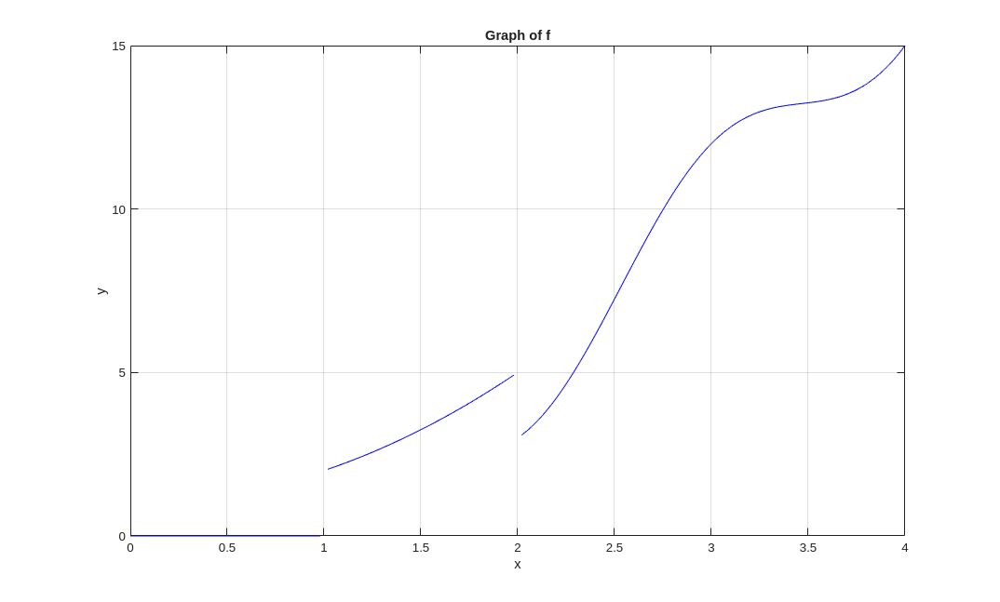
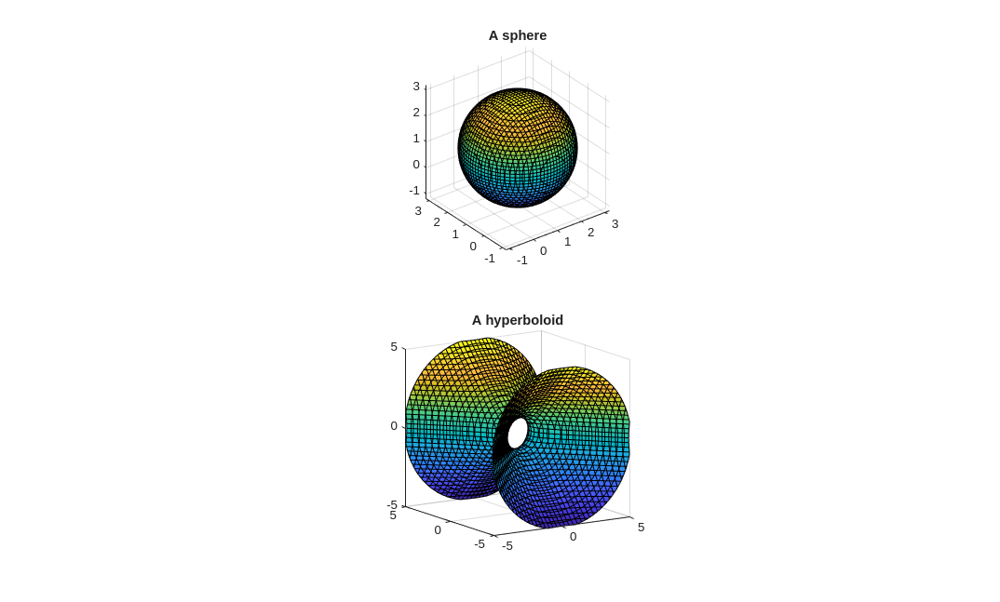

Functions
Matlab has a large set of built-in mathematical functions. It is also easy to create our own functions. This document explains how to create functions. This is the first step to programming in Matlab.
m-files
Example: The following example explains how to create the function funct1 which is defined by \(x \mapsto x \sin(x)\).
First, a file named funct1.m is created using any ascii text editor. The first line of this file contains the statement function y = funct1(x), the second line contains the formula y = x.*sin(x); and the last line contains the statement end. There is nothing else to be added to this file.
Comments can be added to the m-file above. The text following the character % on a line is ignored by Matlab.
Here is the content of the m-file .
% y = funct1(x)
%
% This function takes one argument x and returns the result of the
% computation x sin(x)
function y = funct1(x)
y = x.*sin(x);
end
Note: The file funct1.m can be downloaded by clicking with the right button of the mouse on the previous link and then selecting Save link as ... → Save file.
If the file funct1.m is in the directory from which Matlab as been launched or in a directory included in the list of directories read by Matlab when it is launched (see the menu of Matlab), then our new function funct1 can be called as any other Matlab function as it is shown in the following example.
Example: The value of \(x \sin(x)\) for \(x=5\) is given by the following command.
>> funct1(5)
ans = -4.7946
The first line of a m-file that defines a function has the following format.
The rest of the m-file defines the function using the same syntax as the syntax used in the command window. The semi-colon is needed at the end of each command line otherwise the result of the line will be displayed each time that the m-file is executed. It is strongly recommended to use .* instead of *, ./ instead of /, etc to create an array smart function.
The name of the m-file defining the function function_name must be function_name.m. The name of the function can be almost anything as long as it satisfies the following few rules:
- It must start with a letter (either upper case or lower case).
- It must consist entirely of letters, numbers, and underscores (_). No other symbols are allowed.
- Function names already used such as cos, log, sin, ... should not be used. Matlab does not complain if such names are used but then the original functions are no longer available.
The m-files can be saved in any directory. However, Matlab must know where the m-files are stored. Matlab has a list of directory paths where it looks for m-files. To check if the directory path of the directory containing a m-file is included in the list of directory paths searched by Matlab, it suffices to execute the command path. Matlab then displays all the directory paths that it searches. The directory where a m-file has been saved can be added to the search paths of Matlab, if it is not already present, with the commands path(path, 'the_path') or addpath the_path, where the_path is the full path to the directory where the m-file is stored. For instance, suppose that the file funct1.m is stored in the directory /home/user1/matlab, then the command path(path,'/home/user1/matlab') adds the path /home/user1/matlab to the list of paths searched by Matlab if it is not already included in this list.
The comment help function_name displays the (first group of) commented lines before the line function dependent_variables = function_name(independent_variables) of the file function_name.m. A m-file should always begin with comments describing the function defined in the m-file, what the function does and how to use it including the list and description of its arguments.
Example:
>> help funct1 y = funct1(x)
This function takes one argument x and returns the result of the computation x sin(x)
Function Handles
Some Matlab functions require the name of a function as one of their arguments . For instance, the function quadl that we have introduced above requires the name of the function to be integrated as one of its arguments. Instead of giving the name of the function as one of the arguments, it is often more convenient to give the handle of the function. The handle of a function is a kind of address of the function.
To get the handle of a function, it suffices to add the prefix @ to the name of the function. For instance, the handle of the function funct1 is given by @funct1.
A function handle can be used instead of the name of the function that it represents.
Example: The following commands show how function handles can be manipulated and used.
>> format long >> hand = @funct1; >> hand(10)
ans = -5.440211108893697 >> funct1(10)
ans = -5.440211108893697 >> hands = {hand, @sin}; >> hands{1}(10)
ans = -5.440211108893697 >> hands{2}(10)
ans = -0.544021110889370
hand contains the function handle of the function funct1. Hence hand(10) is identical to the command funct1(10). The variable hands is an array (an ordered list) of two functions handles: the function handle of the function funct1 and the function handle of the Matlab function sin which is the trigonometric sine function. hands{1}(10) is equivalent to the command funct1(10) and hands{2}(10) is equivalent to the command sin(10).
It is sometime cumbersome to create an m-file to define a simple function which will be used only during one Matlab session. Function handles can be used to eliminate the need to create an m-file.
Example: We want to evaluate the function \(\displaystyle f(x) = x^3 + 2 x^2 + 1\) for several values of \(x\).
Instead of creating an m-file for the function \(f\), we define an anonymous function which is only represented by its handle that we store in a variable as it follows.
>> f = @(x) x.^3 + 2* x.^2 + 1
f = function_handle with value: @(x) x .^ 3 + 2 * x .^ 2 + 1
We can then execute the following operations.
>> f(5) , sqrt(f(4)), f(4) + f(5)
ans = 176 ans = 9.848857801796104 ans = 273
Example: We use Matlab to plot the graph of the function \(f\) defined by \(f(x) = (x^2+1) H(x-1) -2 \cos(\pi x) H(x-2)\) on the interval \([0,4]\), where the function \(H\) is the Heaviside function.
The Heaviside function is defined as 1 if the argument is a positive number, 0 if the argument is a negative number, and undefined if the argument is 0 (the origin). Matlab and Octave have a build-in function heaviside in their symbolic toolbox. We assume that this toolbox has not been installed. Therefore, we first define the Heaviside function heaviside.
Here is the content of the m-file .
% Y = heaviside(X) % % This function accept a matrix X as argument and evaluate the % Heaviside function at each of the components of X. % The Heaviside function is defined as 1 if the argument is a positive % number, 0 if the argument is a negative number, and NaN if the % argument is 0. function Y = heaviside(X) Y = (sign(X)+1)/2; Y(Y == 1/2) = NaN; end
This defintion of the function heaviside may seem to be over complicated but our goal was to create an array smart function to take advantage of Matlab optimization. As expected, we have the following results.
>> X = [ 1 -2 0 3]; >> heaviside(X)
ans = [ 1 0 NaN 1 ]
We can now define the function \(f\) and plot its graph with the Matlab function fplot.
>> f = @(x) (x.^2+1).*heaviside(x-1) - 2*cos(pi*x).*heaviside(x-2); ...
x = 0:0.02:4; ...
y = f(x); ...
plot(x,y,'b'); ...
grid on, xlabel('x'), ylabel('y'), ...
title('Graph of f')

Remark: We have seen in the example about drawing the
frame of a box in the document
that we can use a point with coordinates
[NaN NaN NaN] to
break a continuous curve. This technique has also been used in the
previous example to break the graph of the function \(f\).
Since the Heaviside function takes the value
NaN at the origin, we have that
\(f\) takes the value
NaN at 1 and 2.
We choose mesh points such that x includes
the points 1 and 2. Thus, no line is drawn between
\( (1,f(1-)) \) and \( (1,f(1+)) \),
and between \( (2,f(2-)) \) and \( (2,f(2+)) \).
To get a better appreciation of the role played by NaN, we consider the function \(f(x) = (x^2+1) F(x-1) -2 \cos(\pi x) F(x-2)\) on the interval \([0,4]\), where \(F(x) = (\text{sgn}(x)+1)/2 \). We have that \(F(x) = 0 \) for \(x < 0\), \(F(x) = 1\) for \(x >0\), and \(F(0) = 1/2\). If we use the commands
>> f = @(x) (x.^2+1).*((sign(x-1)+1)/2) - 2*cos(pi*x).*((sign(x-2)+1)/2); ... x = 0:0.01:4; ... y = f(x); ... plot(x,y,'b'); ... grid on;
then we do not get the graph of a function (try it). There are some vertical lines where there should be only one point. To plot the graph of \(f\), we have to use commands like the following ones.
>> f = @(x) (x.^2+1).*((sign(x-1)+1)/2) - 2*cos(pi*x).*((sign(x-2)+1)/2); ... x = 0:0.02:0.99; ... y = f(x); ... plot(x,y,'b'); ... hold on; ... x = 1.01:0.02:1.99; ... y = f(x); ... plot(x,y,'b'); ... x = 2.01:0.02:4; ... y = f(x); ... plot(x,y,'b'); ... plot(1,f(1),'.b'); ... plot(2,f(2),'.b'); grid on;
The following functions to manipulate function handles are sometime useful.
| Command | Description |
|---|---|
| functions(function_handle) | Display a description of the function associated to the function handle given as argument. |
| func2str(function_handle) | Display the name of the function associated to the function handle given as argument or, if the function handle is associated to an anonymous function, the formula used to define the anonymous function. |
| str2func('function_name') | Return a function handle for a function named function_name. |
| isa(variable. 'function_handle') | Return 1 (or true) if the variable given as the first argument contains a function handle and 0 (or false) if the variable does not contain a function handle. |
Visual Represenations (continued)
We mentioned at the beginning of the document . that there were versions of the functions plot, surf, plot3, contour, ... that accept as arguments the mathematical functions that we define. We provide examples of these new graphics functions below.
Example: We may use the Matlab function fplot to plot the graph of the function \(\displaystyle f(x) = x^3 + 2 x^2 + 1\) that we have considered in a previous example.
>> close >> f = @(x) x.^3 + 2*x.^2 + 1; ... fplot(f,[-4,4],'b', MeshDensity=100); ... grid on

Advice: The method using the
value
NaN to break the
graph of a discontinuous function
does not work with fplot because there is no
way to ensure that the points where the function is discontinuous are
included among the mesh points selected by fplot.
Therefore, for discontinuous functions, it is preferable to
use the function plot and select the mesh points
ourselves as we did in an example above.
We have considered the function \(f(x) = (x^2+1) H(x-1) -2 \cos(\pi x) H(x-2)\) in a previous example. The reader should execute the following commands.
>> f = @(x) (x.^2+1).*heaviside(x-1) - 2*cos(pi*x).*heaviside(x-2); ... fplot(f,[0,4],'b', MeshDensity=100); ... grid on;
On our computer, there is a vertical line at \(x=1\) because the point 1 is not included among the mesh points selected by fplot. The reader should vary the mesh density to see what happen.
Example: We use Matlab to plot the curve given by the parametric representation \( (x,y) = (t \sin(t) \cos(t), (t-1)\cos(t)) \) for \(0 \leq t \leq 20 \).
>> f = @(t) t.*sin(t).*cos(t); ...
g = @(t) (t-1).*cos(t); ...
fplot(f,g,[0,20]); ...
grid on, xlabel('x'), ylabel('y')

The function in Octave that can be used instead of fplot in the present case is ezplot.
Example: We use Matlab to plot the curve given by the parametric representation \( (x,y,z) = (t \sin(t) \cos(t), (t-1)\cos(t), t) \) for \(0 \leq t \leq 20 \).
>> f = @(t) t.*sin(t).*cos(t); ...
g = @(t) (t-1).*cos(t); ...
h = @(t) t; ...
fplot3(f,g,h,[0,20]); ...
grid on, xlabel('x'), ylabel('y'), zlabel('z')

The function in Octave that can be used instead of fplot3 in the present case is ezplot3.
Example: We can draw curves defined implicitly. For instance, we can draw the curve defined by the equation \( 9x^2 - 4 y^2 - 18 x + 16 y = 43 \).
>> h = @(x,y) 9*x.^2 -4*y.^2 - 18*x +16*y - 43; ...
fimplicit(h,[-5 7 -5 8],'r'); ...
xlabel('x') , ylabel('y'), grid on

The function in Octave that can be used instead of fimplicit in the present case is ezplot.
Example: We use Matlab to draw the graph of the function \(f\) defined by \( f(x,y) = x y \sin(y) \cos(x) \) for \(-2\pi \leq x,y \leq 2 \pi \).
>> f = @(x,y) x.*y.*sin(y).*cos(x); ...
fsurf(f,[-2*pi 2*pi -2*pi 2*pi],'MeshDensity', 70); ...
grid on, xlabel('x'), ylabel('y'), zlabel('z')

We may also plot some level curves of \(f\).
>> fcontour(f,[ -2*pi 2*pi -2*pi 2*pi],'MeshDensity', 70); ...
grid on, xlabel('x'), ylabel('y'), ...
colorbar

We may even select the level curves of \(f\) that we want to plot.
>> fcontour(f,[ -2*pi 2*pi -2*pi 2*pi], 'LevelList', [-1 0 1]); ...
grid on, xlabel('x'), ylabel('y')
The fonctions fsurf and fcontour have not been implemented in Octave yet.
Example: We can also draw geometric objects in three dimensions. For instance, we can draw a sphere of radius 2 centred at \( (1,1,1)\) and the hyperboloid \( x^2 + z^2 - y^2 = 1\).
>> F1 = @(x,y) (x-1).^2 + (y-1).^2 + (z-1).^2 -4; ...
F2 = @(x,y) x.^2 + z.^2 - y.^2 -1; ...
subplot(2,1,1); ...
fimplicit3(F1); ...
title('A sphere'); ...
axis('equal'), grid on; ...
subplot(2,1,2); ...
fimplicit3(F2); ...
title('A hyperboloid'); ...
axis('equal'), grid on;
